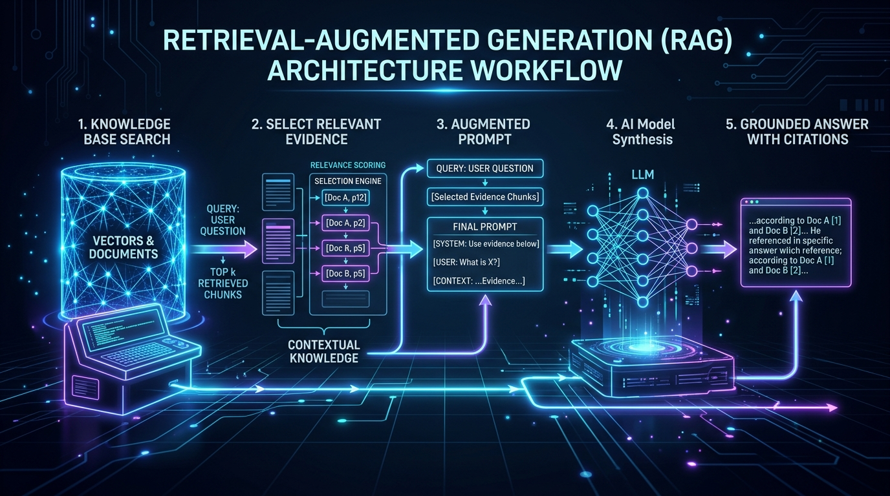

RAG Isn't Dead. Most People Just Don't Understand It.
Large context windows are useful. Retrieval is useful. The mistake is treating them as the same thing. A long-context model gives you a bigger desk. RAG helps you find the right document before you start working.
Read this issue